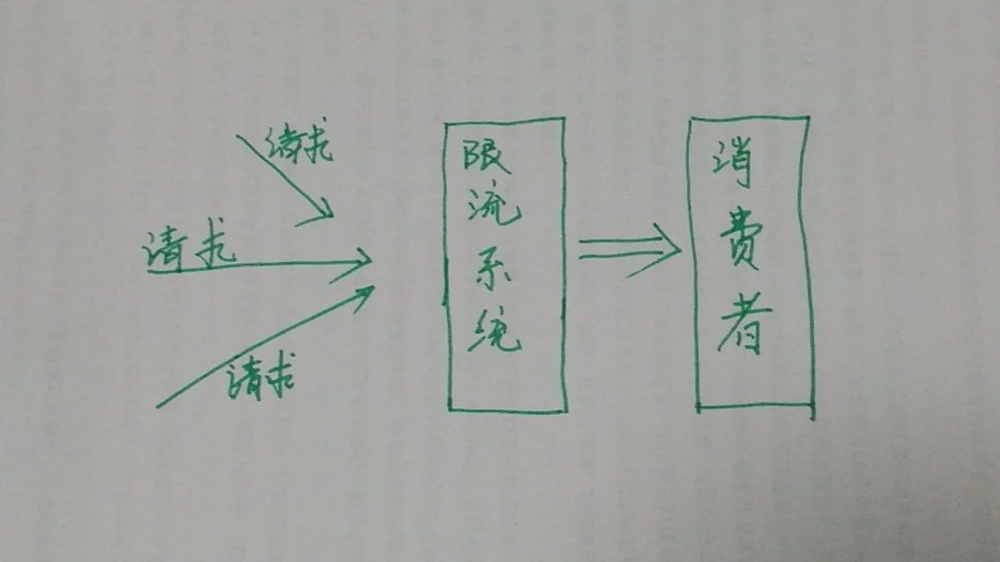
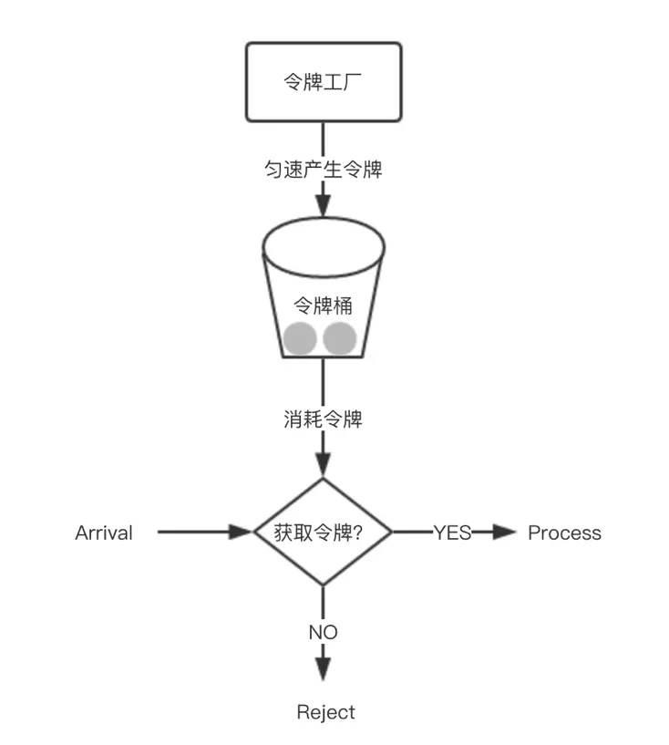
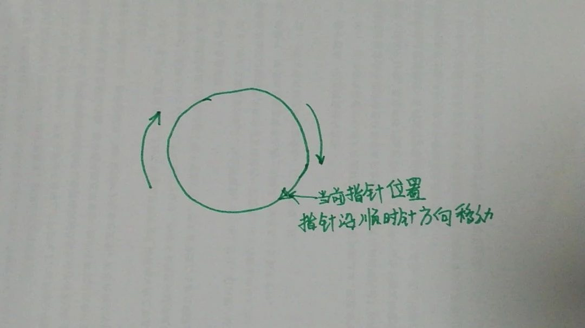
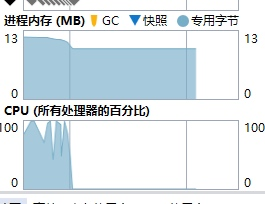
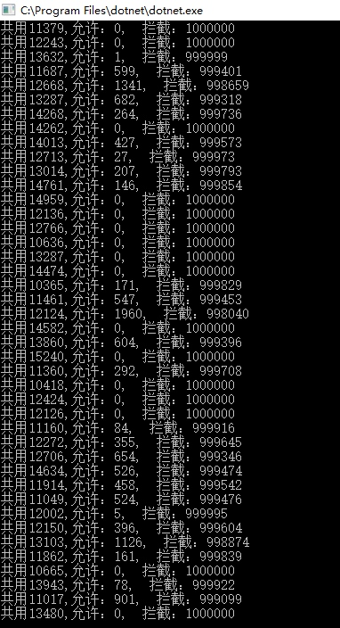
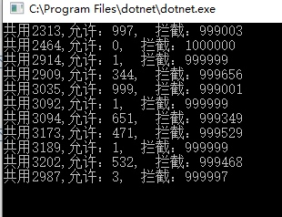

限流，书面意思和作用一致，就是为了限制，通过对并发访问或者请求进行限速或者一个时间窗口内的请求进行限速来保护系统。一旦达到了限制的临界点，可以用拒绝服务、排队、或者等待的方式来保护现有系统，不至于发生雪崩现象。
限流就像做帝都的地铁一般，如果你住在西二旗或者天通苑也许会体会的更深刻一些。我更习惯在技术角度用消费者的角度来阐述，需要限流的一般原因是消费者能力有限，目的为了避免超过消费者能力而出现系统故障。当然也有其他类似的情况也可以用限流来解决。
限流的表现形式上大部分可以分为两大类：
- 限制消费者数量。也可以说消费的最大能力值。比如：数据库的连接池是侧重的是总的连接数，本质上也是限制了消费者的最大消费能力。
- 可以被消费的请求数量。这里的数量可以是瞬时并发数，也可以是一段时间内的总并发数。
除此之外，限流还有别的表现形式，例如按照网络流量来限流，按照cpu使用率来限流等。按照限流的范围又可以分为分布式限流，应用限流，接口限流等。无论怎么变化，限流都可以用以下图来表示：

常用技术实现
- 令牌桶算法
令牌桶是一个存放固定容量令牌的桶，按照固定速率往桶里添加令牌，填满了就丢弃令牌，请求是否被处理要看桶中令牌是否足够，当令牌数减为零时则拒绝新的请求。令牌桶允许一定程度突发流量，只要有令牌就可以处理，支持一次拿多个令牌。令牌桶中装的是令牌。  漏桶算法
漏桶一个固定容量的漏桶，按照固定常量速率流出请求，流入请求速率任意，当流入的请求数累积到漏桶容量时，则新流入的请求被拒绝。漏桶可以看做是一个具有固定容量、固定流出速率的队列，漏桶限制的是请求的流出速率。漏桶中装的是请求。计数器
有时我们还会使用计数器来进行限流，主要用来限制一定时间内的总并发数，比如数据库连接池、线程池、秒杀的并发数；计数器限流只要一定时间内的总请求数超过设定的阀值则进行限流，是一种简单粗暴的总数量限流，而不是平均速率限流。
不用算法的解决方案
我们可以用一个按照时间段限制请求总数的方式来限流。 总体思路是这样：
- 用一个环形来代表通过的请求容器。
- 用一个指针指向当前请求所到的位置索引，来判断当前请求时间和当前位置上次请求的时间差，依此来判断是否被限制。
- 如果请求通过，则当前指针向前移动一个位置，不通过则不移动位置
- 重复以上步骤 直到永远.......

核心代码
以下代码的核心思路是这样的：指针当前位置的时间元素和当前时间的差来决定是否允许此次请求，这样通过的请求在时间上表现的比较平滑。
//限流组件,采用数组做为一个环
class LimitService
{
//当前指针的位置
int currentIndex = 0;
//限制的时间的秒数，即：x秒允许多少请求
int limitTimeSencond = 1;
//请求环的容器数组
DateTime?[] requestRing = null;
//容器改变或者移动指针时候的锁
object objLock = new object();
public LimitService(int countPerSecond,int _limitTimeSencond)
{
requestRing = new DateTime?[countPerSecond];
limitTimeSencond= _limitTimeSencond;
}
//程序是否可以继续
public bool IsContinue()
{
lock (objLock)
{
var currentNode = requestRing[currentIndex];
//如果当前节点的值加上设置的秒 超过当前时间，说明超过限制
if (currentNode != null&& currentNode.Value.AddSeconds(limitTimeSencond) >DateTime.Now)
{
return false;
}
//当前节点设置为当前时间
requestRing[currentIndex] = DateTime.Now;
//指针移动一个位置
MoveNextIndex(ref currentIndex);
}
return true;
}
//改变每秒可以通过的请求数
public bool ChangeCountPerSecond(int countPerSecond)
{
lock (objLock)
{
requestRing = new DateTime?[countPerSecond];
currentIndex = 0;
}
return true;
}
//指针往前移动一个位置
private void MoveNextIndex(ref int currentIndex)
{
if (currentIndex != requestRing.Length - 1)
{
currentIndex = currentIndex + 1;
}
else
{
currentIndex = 0;
}
}
}
测试程序如下：
static LimitService l = new LimitService(1000, 1);
static void Main(string[] args)
{
int threadCount = 50;
while (threadCount >= 0)
{
Thread t = new Thread(s =>
{
Limit();
});
t.Start();
threadCount--;
}
Console.Read();
}
static void Limit()
{
int i = 0;
int okCount = 0;
int noCount = 0;
Stopwatch w = new Stopwatch();
w.Start();
while (i < 1000000)
{
var ret = l.IsContinue();
if (ret)
{
okCount++;
}
else
{
noCount++;
}
i++;
}
w.Stop();
Console.WriteLine($"共用{w.ElapsedMilliseconds},允许：{okCount}, 拦截：{noCount}");
}
测试结果如下：


最大用时15秒,共处理请求1000000*50=50000000 次
并未发生GC操作，内存使用率非常低，每秒处理 300万次+请求 。以上程序修改为10个线程，大约用时4秒之内

如果是强劲的服务器或者线程数较少情况下处理速度将会更快